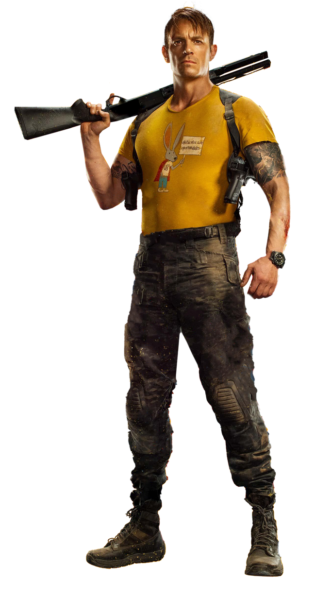

Informações do Rick Flag
Voltar
Equipes DC

Criação de Rick Flag
Rick Flag é um personagem dos quadrinhos da DC Comics, conhecido por sua associação
com o Esquadrão Suicida e sua liderança na equipe. Ele foi criado por Robert
Kanigher e Ross Andru, fazendo sua primeira aparição em "The Brave and the Bold #25" em 1959.
O Personagem Rick Flag
Rick Flag, cujo nome completo é Richard Rogers Flag, é um militar de alto escalão e líder estratégico.
Ele é conhecido por sua dedicação ao serviço e sua coragem no campo de batalha. Flag
é frequentemente recrutado para liderar o Esquadrão Suicida, uma equipe de
supervilões que realiza missões perigosas em troca de redução de suas sentenças.
Rick Flag é retratado como um líder valente e disciplinado, capaz de tomar decisões difíceis
e comandar sua equipe com eficiência. Sua determinação e lealdade aos princípios
morais são características distintivas do personagem.
Quadrinhos Importantes de Rick Flag
Rick Flag teve várias histórias importantes nos quadrinhos da DC Comics, destacando suas missões com o Esquadrão Suicida e sua dinâmica com os membros da equipe. Aqui estão alguns dos quadrinhos mais relevantes do personagem:
"Suicide Squad Vol. 1: Trial by Fire" (1987):
Escrito por John Ostrander e Kim Yale, este arco de história apresenta Rick Flag como líder do Esquadrão Suicida, lidando com ameaças perigosas e gerenciando uma equipe de vilões relutantes.
"Suicide Squad Vol. 4: Discipline and Punish" (2012):
Nesta história, escrita por Adam Glass, Rick Flag enfrenta desafios internos e externos enquanto lidera o Esquadrão Suicida, enfrentando inimigos poderosos e mantendo a coesão da equipe.
"Suicide Squad Vol. 5: Walled In" (2013):
Nesta história escrita por Matt Kindt, Rick Flag e o Esquadrão Suicida enfrentam uma ameaça sobrenatural, colocando suas habilidades e lealdade à prova.
Adaptações em Outras Mídias
Rick Flag também teve várias aparições em outras mídias, incluindo filmes e séries de TV. Aqui estão algumas das adaptações notáveis do personagem:
Filme "Suicide Squad" (2016):
Rick Flag é interpretado por Joel Kinnaman neste filme de live-action, onde ele lidera o Esquadrão Suicida em uma missão perigosa contra uma entidade sobrenatural.
Série de TV "Arrow" (2012-2020):
O personagem Rick Flag aparece em vários episódios da série "Arrow", interpretado por vários atores, mostrando suas habilidades e sua conexão com a organização ARGUS.
Habilidades de Rick Flag
Rick Flag não possui superpoderes, mas é um líder militar habilidoso e estrategista. Aqui estão algumas de suas principais habilidades:
Liderança Tática:
Rick Flag é um líder excepcional, capaz de comandar equipes e coordenar estratégias em situações de combate.
Habilidades de Combate:
Ele possui treinamento militar avançado e é proficiente em várias formas de combate, incluindo luta corpo a corpo e o uso de armas convencionais.
Inteligência e Determinação:
Rick Flag é conhecido por sua inteligência estratégica e sua determinação inabalável em cumprir suas missões, mesmo em face de adversidades.
Conclusão
Rick Flag é um personagem marcante dos quadrinhos da DC Comics, conhecido por sua liderança no Esquadrão Suicida e suas habilidades militares. Sua dedicação ao serviço, coragem e liderança estratégica o tornam um personagem respeitado e confiável. Com aparições em quadrinhos, filmes e séries de TV, Rick Flag continua a intrigar os fãs com suas missões perigosas e sua dinâmica com os membros do Esquadrão Suicida. Sua liderança tática, habilidades de combate e inteligência estratégica o tornam uma peça-chave nas histórias do Esquadrão Suicida e um personagem notável no universo da DC Comics.